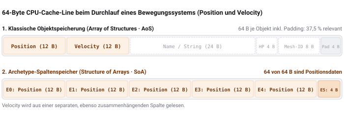
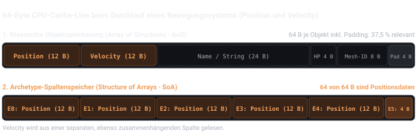
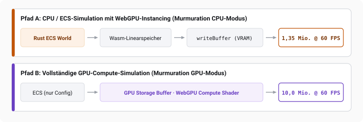
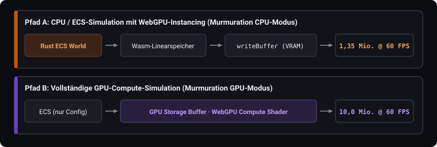

Kapitel 1 · Grundlagen
Grundlagen
Artisan verbindet drei Ideen. Ein Entity-Component-System (ECS) ordnet die Spielwelt als Daten. WebAssembly verarbeitet diese Daten im Browser. WebGPU stellt sie dar. Dieses Kapitel baut die drei Teile nacheinander auf.
Von Spielobjekten zu Daten
Bevor es um WebAssembly oder Grafikkarten geht, beginnt das Problem bei der Form der Spielwelt. Bei vielen unabhängig aktualisierten Einheiten beeinflusst die Organisation ihrer Daten unmittelbar, wie effizient der Prozessor sie verarbeiten kann.
Das folgende Beispiel führt in ein Entity-Component-System, kurz ECS, ein. Zur Erklärung dient bewusst eine vereinfachte, fiktive Spielwelt mit Drachen, Fledermäusen und Goblins. Sie gehört nicht zum Datenmodell von Vivarium, macht unterschiedliche Komponentenkombinationen aber deutlicher sichtbar als die dort relativ ähnlich aufgebauten Siedler.
Ein klassisches Objekt in einem Spiel wird häufig über Vererbung modelliert: ein Gegner erbt von einer Basisklasse, ein fliegender Gegner erbt zusätzlich von einer Flug-Fähigkeit. Solche Hierarchien werden unhandlich, sobald sich Fähigkeiten mischen sollen, die in unterschiedlichen Zweigen der Hierarchie liegen. Ein Entity-Component-System löst das Problem, indem es die Hierarchie ganz weglässt.
Ein Objekt wird stattdessen über die Bausteine beschrieben, die ihm gerade zugeordnet
sind. Ein fliegender, angreifbarer Gegner besitzt zum Beispiel die Bausteine
Position, Velocity, Health und
Flying. Verliert er die Flugfähigkeit, verschwindet nur der Baustein
Flying, ohne dass irgendeine Klassenhierarchie angepasst werden müsste
[8].
- Entity
- Eine Kennung aus ID und Generation. Die Generation verhindert, dass eine wiederverwendete ID mit einem gelöschten Entity verwechselt wird. Das Entity selbst trägt keine Daten.
- Component
- In Artisan ein reiner Datencontainer, zum Beispiel
Position { x, y }. Verhalten liegt nicht in der Komponente, sondern in Systemen. - System
- Eine Funktion, die über alle Entities mit passenden Komponenten läuft, zum Beispiel: Geschwindigkeit lesen, Position schreiben.
- Query
- Die Datenanfrage eines Systems: welche Komponenten müssen vorhanden sein oder fehlen, und auf welche davon wird lesend oder schreibend zugegriffen?
Die Query wählt damit nicht nur Daten aus, sondern beschreibt auch den Zugriff darauf. Daraus lässt sich ableiten, ob zwei Systeme gefahrlos gleichzeitig laufen können. Lesen beide nur, gibt es keinen Konflikt. Schreibt eines eine Komponente, die das andere gerade liest oder schreibt, ist Gleichzeitigkeit ohne zusätzliche Absicherung nicht sicher. Der Scheduler, also die Ablaufplanung der Engine, nutzt diese Information später, um Systeme in eine sichere Reihenfolge zu bringen und verträgliche Systeme parallel einzuplanen.
Ein kleines Beispiel macht das greifbar und wird im nächsten Abschnitt für zwei unterschiedliche Speichermodelle weiterverwendet: fünf Entities aus einer einfachen Szene, verteilt auf vier Kombinationen von Komponenten.
| Entity | Position | Velocity | Health | Flying |
|---|---|---|---|---|
| E1 - Drache | ||||
| E2 - Fledermaus | ||||
| E3 - Goblin | ||||
| E4 - Pfeil | ||||
| E5 - Wegpunkt |
Wie Komponenten im Speicher liegen
Die bisherige Beschreibung legt noch nicht fest, wo die Werte einer Komponente tatsächlich im Speicher liegen. Genau das entscheidet aber darüber, wie schnell ein System durch tausende Entities laufen kann. Zwei Speichermodelle haben sich durchgesetzt.
Ein Sparse Set hält für jeden Komponententyp ein dicht gepacktes Array mit den tatsächlich vorhandenen Werten, dazu eine Indextabelle, die von einem Entity zur Position in diesem Array führt [7]. Einfügen, Entfernen und der direkte Zugriff über ein bekanntes Entity sind dabei sehr günstig. Der Nachteil zeigt sich, sobald eine Query mehrere Komponententypen gleichzeitig braucht: Für jedes Entity muss dann geprüft werden, ob es in allen beteiligten Sets vorkommt, bevor überhaupt gerechnet werden kann.
Nur E1, E2 und E3 aus dem Beispiel oben besitzen Health. Ein Sparse Set für
diese Komponente hält deshalb nur drei Werte im dichten Array, dazu eine Indextabelle, die
von jedem Entity zur richtigen Position führt:
Dichtes Array - Health
Index 080
Index 145
Index 230
Indextabelle
E1→ 0
E2→ 1
E3→ 2
E4-
E5-
Ein Archetype-Modell geht umgekehrt vor. Alle Entities mit exakt
derselben Kombination von Komponenten landen zusammen in einer Tabelle, ihrem
Archetype. Innerhalb dieser Tabelle liegt jeder Komponententyp in einer eigenen,
zusammenhängenden Spalte. Eine Query nach Position und Velocity
muss dadurch nur die Archetypes finden, die beide Spalten besitzen, und kann sie danach
ohne weitere Prüfung Zeile für Zeile durchlaufen. Die fünf Beispiel-Entities von oben
verteilen sich dabei auf vier Archetypes, weil vier verschiedene Kombinationen vorkommen:
Archetype APosition, Velocity, Health, Flying
| E1 - Drache |
| E2 - Fledermaus |
Archetype BPosition, Velocity, Health
| E3 - Goblin |
Archetype CPosition, Velocity
| E4 - Pfeil |
Archetype DPosition
| E5 - Wegpunkt |
Der Preis dafür. Der Vorteil des Archetype-Modells ist die dichte,
ununterbrochene Iteration. Bezahlt wird er bei strukturellen Änderungen: Verliert E1, der
Drache, seine Flugfähigkeit, ändert sich seine Signatur, also die genaue Kombination
seiner Komponenten. Es muss komplett von Archetype A nach Archetype B umziehen. Dabei
wandert nicht nur die entfernte Komponente
Flying, sondern auch Position, Velocity und
Health in die neue Tabelle mit.
Beide Modelle schließen sich nicht gegenseitig aus. Bevy speichert standardmäßig in Tabellen und bietet Sparse Sets als Alternative für Komponenten an, die häufig hinzugefügt und entfernt werden [9]. Flecs verwendet ebenfalls Archetypes, erlaubt aber zusätzlich Sparse-Komponenten außerhalb der Tabellen [10]. Artisan besitzt im aktuellen Stand nur das Archetype-Modell, keine solche Ausweichmöglichkeit.
Wie stark sich dieser Zielkonflikt tatsächlich auswirkt, misst die Evaluation getrennt: bei dichter Iteration über zusammenhängende Spalten, bei strukturellen Änderungen der Komponentenkombination und beim wahlfreien Zugriff auf einzelne Entities. Zur Messreihe
Warum zusammenhängende Daten schneller sind
Zwischen Prozessor und Arbeitsspeicher liegt ein kleiner, schneller Zwischenspeicher, der CPU-Cache. Der Prozessor lädt Werte daraus nicht einzeln, sondern in Blöcken benachbarter Bytes, den Cache Lines. Werden Werte nacheinander im Speicher gelesen, liegen die nächsten benötigten Werte oft schon im Cache, bevor sie ausdrücklich angefragt werden. Dieses Prinzip heißt räumliche Lokalität.
Archetype-Spalten sind für genau dieses Muster gebaut: Alle Werte eines Komponententyps
liegen direkt hintereinander. Ein Bewegungssystem, das nur Position und
Velocity braucht, lädt dadurch keine Namen, Materialien oder Kollisionsformen
mit, nur weil diese zufällig zum selben Entity gehören.


Das erklärt, warum ein Vorteil zu erwarten ist. Es belegt ihn aber noch nicht: Wie viel davon in der Praxis ankommt, hängt zusätzlich von der Query-Implementierung, der Zahl der Archetypes, der Breite der Komponenten, der Parallelisierung und der konkreten Hardware ab.
Wie Rust in den Browser kommt
Rust in Kürze. Rust ist eine kompilierte, statisch typisierte Systemprogrammiersprache ohne Garbage Collector. Der Compiler verfolgt, wem ein Wert gehört und wie lange Verweise darauf gültig sind. Dadurch verbindet Rust eine ähnlich genaue Kontrolle über Speicher und Laufzeitkosten wie C oder C++ mit Prüfungen, die viele ungültige Speicherzugriffe und konkurrierende Schreibzugriffe bereits beim Kompilieren verhindern. Die stabile Version 1.0 erschien 2015 [14].
Warum Rust? Artisan hätte grundsätzlich auch in C oder C++ entwickelt
werden können; beide Sprachen lassen sich nach WebAssembly übersetzen und erlauben
ebenfalls ein kontrolliertes Speicherlayout. Rust wurde nicht gewählt, weil es
automatisch schneller wäre, sondern wegen seiner zusätzlichen Sicherheitsprüfungen und
seines passenden Werkzeug-Ökosystems. Cargo verwaltet Build und Abhängigkeiten,
wasm-bindgen verbindet Rust mit JavaScript und
wasm-bindgen-rayon überträgt Rayons Parallelisierungsmodell auf Web Workers.
Derselbe Engine-Kern lässt sich als WebAssembly-Modul für den Browser und nativ für Tests
und Benchmarks kompilieren.
Rust macht hardwarenahe, potenziell unsichere Operationen nicht überflüssig. Artisan
verwendet intern gezielt unsafe-Code, etwa für direkte Speicherzugriffe. Der
Vorteil besteht darin, solche Stellen sichtbar einzugrenzen und nach außen eine möglichst
sichere Schnittstelle bereitzustellen.
JavaScript ist dynamisch typisiert: Eine Variable kann zur Laufzeit Werte unterschiedlicher Typen aufnehmen. Außerdem verwaltet die Sprache Speicher automatisch. Moderne JavaScript-Engines übersetzen häufig ausgeführten Code zwar zur Laufzeit in Maschinencode, also direkt ausführbare Prozessorbefehle. Diese Optimierung beruht jedoch auf Annahmen über die beobachteten Typen und kann bei Änderungen wieder verworfen werden. Auch den Zeitpunkt der Garbage Collection, der automatischen Freigabe nicht mehr benötigten Speichers, bestimmt nicht die Anwendung.
Für ein Archetype-ECS ist vor allem der fehlende Zugriff auf das Speicherlayout ein Problem: Die ganze Idee der Archetype-Spalten beruht darauf, Komponenten als zusammenhängenden Speicherbereich zu behandeln, den auch eine andere Sprache adressieren kann. Gesucht ist deshalb kein Ersatz für JavaScript als Ganzes, sondern ein Ausführungsformat für genau den rechen- und speicherintensiven Teil, den Engine-Kern.
WebAssembly, kurz Wasm, ist ein sicheres, portables und hardwarenahes Codeformat. Es wurde von der WebAssembly-Arbeitsgruppe des W3C standardisiert und ist seit 2019 ein offizieller Webstandard. Die verbreiteten Browser unterstützen es. Wasm ersetzt JavaScript nicht, sondern ergänzt es vor allem bei rechenintensiven Programmteilen [15].
WebAssembly definiert ein kompaktes Binärformat, ein lesbares Textformat und die Regeln einer virtuellen Maschine. Ihre Befehle arbeiten mit einem internen Stapel von Werten und werden vom Browser validiert. Anschließend kann der Browser sie interpretieren oder in Maschinencode übersetzen. Programme in Rust, C oder C++ lassen sich in dieses Format kompilieren. Ein WebAssembly-Modul ist daher kein fertiges Programm für eine bestimmte CPU, sondern ein Zwischenformat, das die jeweilige Laufzeitumgebung weiterverarbeitet [1].
Ausgeführt wird das Modul in einer Sandbox, also einer vom restlichen System abgegrenzten Umgebung. Es hat keinen freien Zugriff auf das Betriebssystem, das Document Object Model (DOM) der Webseite oder andere Browserobjekte. Verfügbar sind nur Funktionen und Werte, die die Umgebung ausdrücklich in das Modul importiert oder aus ihm exportiert. Den Zugang zu Browser-APIs vermittelt deshalb weiterhin JavaScript [2].
Die Grenze zwischen Rust und JavaScript
Rust und JavaScript arbeiten in unterschiedlichen Umgebungen. Über den Speicher des WebAssembly-Moduls können sie trotzdem dieselben Daten nutzen. Dieser lineare Speicher ist vereinfacht eine lange, zusammenhängende Reihe von Bytes. Rust legt dort zum Beispiel die Positionen aller Entities ab.
JavaScript kann diesen Speicher als ArrayBuffer lesen. Ein TypedArray legt
fest, wie die Bytes zu verstehen sind. Ein Float32Array behandelt sie zum
Beispiel als Kommazahlen. Kennt JavaScript Startadresse, Datentyp und Länge einer
Komponentenspalte, kann es deren Werte direkt lesen. Es muss dafür weder jedes Entity
einzeln abfragen noch Kopien als JavaScript-Objekte anlegen
[3].
Der Austausch ist dennoch nicht kostenlos. Einzelne Zahlen lassen sich einfach übergeben. Strukturierte Rust-Daten, die JavaScript inhaltlich lesen soll, müssen an der aktuellen Artisan-Schnittstelle dagegen beschrieben, umgewandelt oder kopiert werden. Auch viele kleine Aufrufe zwischen Rust und JavaScript kosten Zeit. Ein gebündelter Zugriff auf einen größeren Speicherbereich ist deshalb meist effizienter.
Adressen können sich ändern. Wenn der WebAssembly-Speicher oder eine
Komponentenspalte wächst, können die Daten an eine neue Stelle verschoben werden. Auch
ein Archetype-Wechsel kann die Position eines Entity verändern. JavaScript darf alte
Speicherverweise deshalb nicht dauerhaft behalten, sondern muss sie bei Änderungen
erneuern.
[3]
Artisans Speicherbrücke nutzt genau dieses Prinzip: Die Komponentendaten bleiben im WebAssembly-Speicher. JavaScript erhält nur die nötigen Informationen, um sie dort direkt zu lesen. Zur Brücke
Arbeit auf mehrere Threads verteilen
Viele Aufgaben einer Webanwendung laufen zunächst im Hauptthread. Muss dieser gleichzeitig die Oberfläche bedienen und tausende Entities aktualisieren, kann die Darstellung ins Stocken geraten. Web Workers erlauben deshalb, Rechenarbeit auf zusätzliche Hintergrundthreads zu verteilen.
Damit diese Threads nicht für jede Nachricht Daten kopieren müssen, nutzt Artisan einen
gemeinsam nutzbaren WebAssembly-Speicher (SharedArrayBuffer). Die Aufgaben
werden so aufgeteilt, dass zwei Threads nicht dieselben Werte gleichzeitig verändern. Wo
sich Zugriffe nicht vermeiden lassen, sorgen atomare Operationen für eine definierte
Reihenfolge. Der Browser erlaubt diesen Speicher nur, wenn die Seite über die Header
Cross-Origin-Opener-Policy und Cross-Origin-Embedder-Policy
abgeschottet ist.
Für die eigentliche Verteilung verwendet Artisan wasm-bindgen-rayon. Rayon
teilt unabhängige Teile einer Query oder eines Systems auf mehrere Threads auf. Dadurch
können passende Entities gleichzeitig verarbeitet werden, während voneinander abhängige
Systeme weiterhin nacheinander laufen
[11]
[12].
Wie aus Daten ein Bild wird
Eine Grafikkarte ist auf die gleichzeitige Verarbeitung vieler gleichartiger Operationen ausgelegt. Bei der Rasterisierung werden geometrische Formen aus Eckpunkten und Dreiecken in Bildpunkte auf dem Bildschirm umgerechnet. Ein Vertex Buffer hält die Geometriedaten, etwa die Ecken eines Dreiecks. Ein Vertex Shader transformiert diese Punkte in den für die Darstellung nötigen Koordinatenraum, ein Fragment Shader bestimmt danach für jedes erzeugte Bildfragment unter anderem seine Farbe.
Ein Draw Call weist die Grafikkarte an, eine Geometrie mit einem bestimmten Zustand zu zeichnen. Seine Kosten liegen nicht nur in der Geometrieverarbeitung: Vorher müssen der Hauptprozessor (CPU), der Browser und der Grafikkartentreiber den Befehl kodieren, benötigte Speicherobjekte referenzieren und die Arbeit an die GPU übergeben. Viele kleine Draw Calls können deshalb einen CPU-seitigen Engpass erzeugen, selbst wenn die Grafikkarte pro Aufruf kaum etwas zu tun hat.
WebGPU behandelt den Speicher der Webseite und GPU-Ressourcen als getrennte Bereiche,
selbst wenn CPU und integrierte GPU physisch denselben Arbeitsspeicher nutzen. Daten aus
dem JavaScript- oder WebAssembly-Speicher lassen sich daher nicht unmittelbar als Vertex
Buffer verwenden. Die Anwendung legt einen GPUBuffer an und überträgt Daten
beispielsweise mit GPUQueue.writeBuffer. Dieser Schritt bleibt nötig, selbst
wenn JavaScript den ursprünglichen Wert zuvor ohne Kopie aus dem Wasm-Speicher gelesen hat.
Warum WebGPU statt WebGL?
WebGL wird von der Khronos Group standardisiert. Die erste Version erschien 2011, basiert auf OpenGL ES und brachte breit verfügbare, hardwarebeschleunigte 3D-Grafik ohne Plugin in den Browser [6]. WebGL arbeitet als Zustandsmaschine: Ein Aufruf bindet zum Beispiel einen Buffer oder ein Shader-Programm an den aktiven Kontext, ein späterer Draw Call verwendet den dann gültigen Zustand. Die Wirkung eines Zeichenbefehls hängt damit von vorausgegangenen Zustandsänderungen ab, nicht nur von seinen eigenen Parametern. Das erschwert Validierung, Fehlersuche und Parallelisierung im Treiber und im Browser.
WebGPU wird von der W3C-Arbeitsgruppe GPU for the Web gemeinsam mit Browser- und Hardwareherstellern entwickelt. Die API ist als moderner Nachfolger von WebGL gedacht und orientiert sich an heutigen hardwarenahen Grafik-APIs wie Vulkan, Metal und Direct3D 12; sie ist jedoch kein direkt kompatibler Ersatz. Zustände werden nicht mehr stillschweigend vorausgesetzt, sondern in expliziten Objekten gebündelt [4].
Stand August 2026. WebGPU befindet sich noch im
Candidate-Recommendation-Prozess des W3C. Es ist in aktuellen Chromium-Browsern und
Safari sowie auf mehreren Firefox-Plattformen verfügbar. Auf einzelnen Kombinationen aus
Browser, Betriebssystem und Hardware, insbesondere Teilen von Linux und Android, bleibt
die Unterstützung uneinheitlich
[4]
[16].
Zentral dafür ist die GPURenderPipeline: Sie bündelt Shader, Vertex-Layout
und feste Pipelinezustände in einem Objekt, das einmal erstellt und danach mit einem
einzigen Befehl aktiviert wird. Ein Command Encoder zeichnet GPU-Operationen auf
und erzeugt daraus einen Command Buffer, also eine vorbereitete Befehlsliste. Eine
Queue nimmt solche Listen gesammelt zur Ausführung an. Befehle hängen dadurch nicht mehr
von einem einzigen globalen Zustand ab, sondern referenzieren ihre Ressourcen innerhalb
klar abgegrenzter Render- oder Compute-Passes. Größere, in sich abgeschlossene
Arbeitseinheiten geben der Implementierung mehr Spielraum für Planung und Optimierung.
WebGPU validiert die Befehle weiterhin, meldet einen Teil der Fehler aber erst später und
nicht unmittelbar im auslösenden JavaScript-Aufruf.
Neben Renderpipelines kennt WebGPU auch Compute Pipelines für allgemeine parallele Berechnungen, unabhängig von der festen Abfolge aus Vertex- und Fragmentverarbeitung. Die programmierbaren Stufen beider Pipelinearten werden in der WebGPU Shading Language (WGSL) geschrieben; weitere Zustände legt die Anwendung über WebGPU-Objekte fest [5]. Artisans reguläre Renderpipeline gruppiert passende Objekte zu Batches, also gemeinsam verarbeiteten Gruppen, und zeichnet sie per Instancing. Aus der Compute-Unterstützung von WebGPU folgt keine konkrete Nutzung in jedem Renderpfad.
Viele Objekte mit wenigen Befehlen zeichnen
Beim Instancing zeichnet ein einziger Draw Call dieselbe Geometrie mehrfach. Die Vertexdaten des Meshes, also des geometrischen Modells, werden dabei nur einmal bereitgestellt. Pro Instanz unterscheiden sich lediglich zusätzliche Werte wie Position oder Materialfarbe.
Die Zahl der Draw Calls sinkt dadurch nur, wenn sich mehrere Objekte tatsächlich gemeinsam verarbeiten lassen. In Artisans aktueller Pipeline führen unterschiedliche Meshes, Shader, Texturen oder andere Pipelinezustände zu getrennten Batches. Andere Renderer können einige dieser Unterschiede mit Techniken wie Texturatlanten oder erweiterten Draw-Verfahren zusammenfassen. Eine Engine muss deshalb bestimmen, welche Entities gemeinsam instanziert gezeichnet werden können.
In Artisan läuft diese Auswahl im Rust- und Wasm-Kern, JavaScript setzt anschließend nur die daraus abgeleiteten Draw Calls ab. Die Pipeline ist damit CPU-gesteuert und nutzt GPU-Instancing. Bei einer vollständig GPU-gesteuerten, häufig als GPU-driven bezeichneten Pipeline bleiben dagegen auch Simulation, Sichtbarkeitsprüfung und Instanzdaten auf der Grafikkarte. Das kann bei sehr vielen einfachen Objekten schneller sein, weil pro Frame, also pro berechnetem Bild, weniger Daten übertragen werden müssen. Zur Pipeline
Die Demo Murmuration zeigt CPU- und GPU-Simulation im Vergleich. Bei der CPU-Simulation ist jeder Würfel ein ECS-Entity und wird in Rust aktualisiert. Danach zeichnet WebGPU alle Würfel per Instancing. Bei der GPU-Simulation liegen die Daten der Würfel direkt in einem GPU-Buffer und werden dort von einem Compute Shader, einem Rechenprogramm auf der GPU, aktualisiert. Das ECS enthält dann nur die Konfiguration der gesamten Simulation. Das Rendering übernimmt in beiden Modi die GPU. Oben links kann unter Simulation path zwischen ECS - CPU und GPU compute gewechselt werden.


Auf dem Testsystem mit Intel Core i5-13600KF und RTX 4070 erreicht die Demo bei 60 Bildern pro Sekunde (FPS) etwa 1,35 Millionen gleichzeitig simulierte und dargestellte ECS-Entities. Im GPU-Compute-Pfad sind ohne Frustum Culling etwa 10 Millionen Würfel möglich. Frustum Culling überspringt Würfel außerhalb des sichtbaren Kamerabereichs. Mit dieser Sichtbarkeitsprüfung waren in den getesteten Ansichten etwa 1,2- bis 4-mal so viele Würfel möglich.